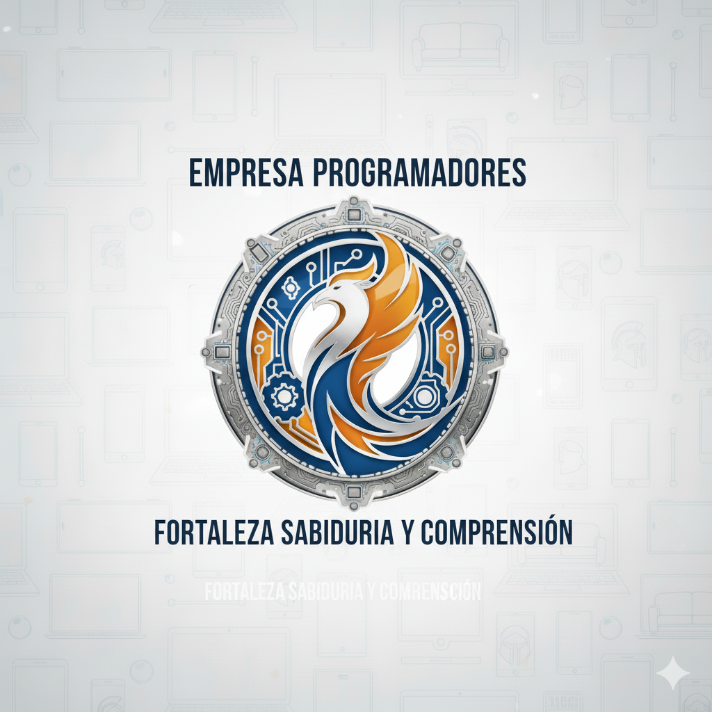

Sabiduría Profesional Mundial. En este espacio hablaremos sobre conocimientos básicos de la verdad y compartiremos todo de forma gratuita, especialmente para profesionales del arte y el diseño. Aquí podrás subir y modificar fotos, crear tus propios diseños y acceder a demostraciones de logotipos para distintas áreas profesionales. También tendrás herramientas para el entretenimiento y la educación, pensadas para ayudarte a alcanzar el éxito y facilitar diversas tareas útiles en la sociedad.
Aclarcion: No somos obsesivo por el dinero (haci que es todo gratis).
Volver al inicio 